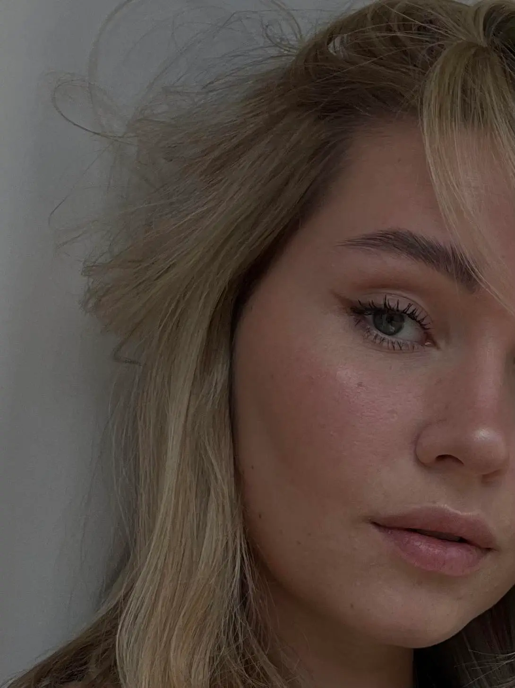

CV
Jeg er en 24-årig pige fra København, der i skrivende stund er ved at afslutte første semester af Multimediedesign på KEA. Jeg fandt ud af, efter mit sidste afsluttede fag på min tidligere uddannelse, at kommunikation igennem farver, designs og layouts talte til mig. Jeg har fra 1. semester fået en rygsæk fyldt med læring indenfor kode, design, video og animation.
KOMPETENCER
//Gode kommunikationsevner
//Struktureret
//Planlæggende
//God til samarbejde
//Selvstændig
//Ansvarlig
//Logisk tænkende
//Analytisk
//Pålidelig
